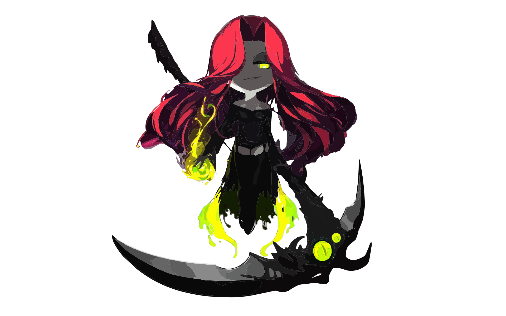

click to 👀
/sdownloading user data: /e█████████████████
/!
/sdownload complete./e/n
/ssubmitting user report: /e█████████████████
/!
submission complete./n
click to continue.
/?/!
hi./n
you just fell for the oldest trick in the book./n
you didn't think that would actually work, did you?/n
sigh./n
/n
well, thanks for visiting./n
/n
any account data linked to browser cache information has been transmitted back to nexon.
/n
click to continue
/?/!
just kidding./n
you h😈rny fool./n
/n
😜
/?